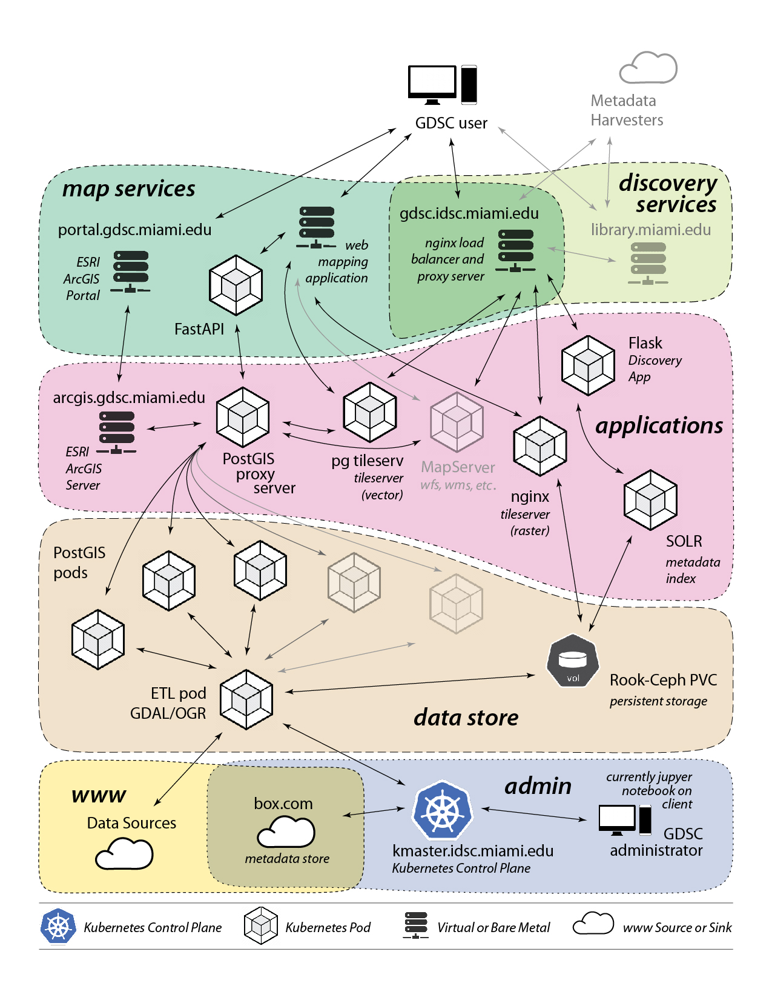
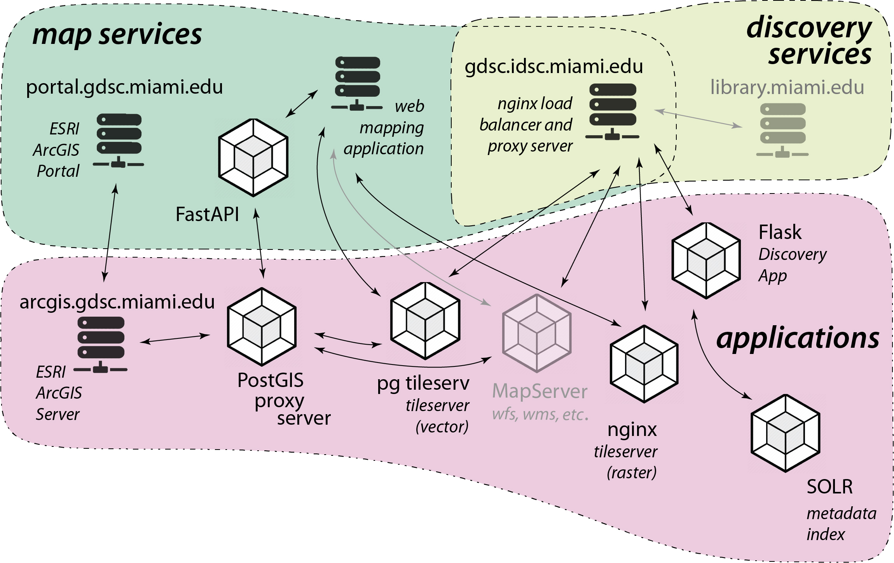
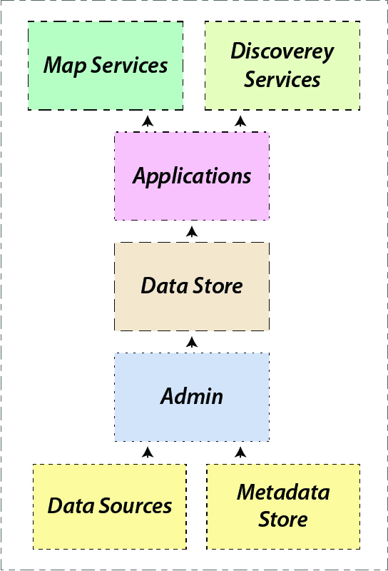
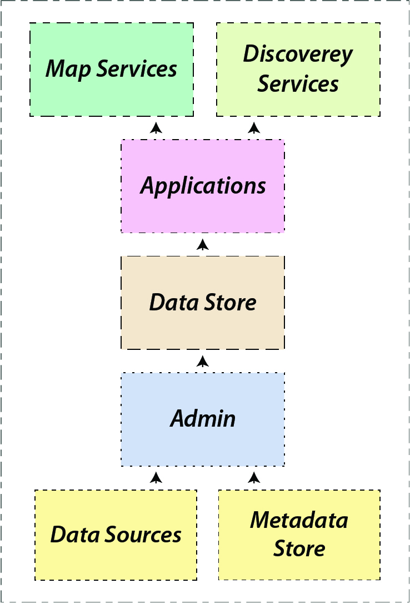
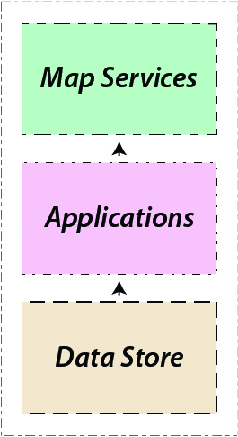
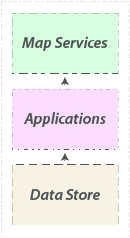

GDSC
Geospatial Digital Special Collections
Geospatial Digital Special Collections
Timothy B Norris - Librarian Associate Professor
University of Miami Libraries - tnorris@miami.edu Christopher Mader - Director of Software and Data Engineering
Institute for Data Science and Computing - cmader@med.miami.edu
University of Miami Libraries - tnorris@miami.edu Christopher Mader - Director of Software and Data Engineering
Institute for Data Science and Computing - cmader@med.miami.edu
Timothy B Norris - Librarian Associate Professor
University of Miami Libraries - tnorris@miami.edu Christopher Mader - Director of Software and Data Engineering
Institute for Data Science and Computing - cmader@med.miami.edu
University of Miami Libraries - tnorris@miami.edu Christopher Mader - Director of Software and Data Engineering
Institute for Data Science and Computing - cmader@med.miami.edu
yet ....
Geospatial data struggle to be FAIR
- Multiple sources and standards
- Difficult harmonization
- Repeated curation work
A well constructed GIS is a special collection made
purposefully to curate cartographic exhibits with
dynamic geospatial data.
GDSCGeospatial Digital Special Collections
Provide well curated data collections that are
findable, accessible, interoperable, and reusable.
- Container based architecture for data as a service
- Centrally located metadata store
- Reusable structured data packages
- Transparent provenance of ETL process
- Metadata guided by (geo)DCAT
- Apache SOLR for discovery layer
- Flexible service provision with proven technologies
- Two case studies: DVMT and OHDSI
Basically a Repository?

stick figure image credit: XKCD https://xkcd.com/927

XKCD https://xkcd.com/927
A Container Based Approach
GDSC system requirements:
- Map and data services that can be consumed by humans or machines.
- User interfaces for the discovery and consumption of spatial data.
- Applications that meet a variety of needs to serve both endpoints for data services and interfaces for human users.
- Back-end datastore that is sustainable and resilient.
- Management tools for collection building and maintenance.


The Data Package
Example data package to show structure and content. The processStep and the datestamp text files are essential to understand provenance of the data (from source to service) and are also included in the metadata.
+-- svi2020_fl_tract/ | datestamp.txt | +-- download/ | | SVI2020_FLORIDA_tract.gdb | +-- etl/ | | processStep.txt | | svi2020_fl_tract_osgeo.sh | | svi2020_fl_tract_postgis.sh | meta_dcat_svi2020_fl_tract.json | meta_datacite_svi2020_fl_tract.json | meta_etl_svi2020_fl_tract.json | podID
Provenance
Example process step documentation for GDAL/OGR transformations and load followed by SQL transformations in PostGIS.
#########
# Step 1 - bash script (pseudo code)
####
# create directory structure and move into it
mkdir -p /data/svi2020_florida_tract/{download,etl} && cd /data/svi2020_florida_tract
# set update flag based on last update and update frequency
do_update=0 if date() < last_update + update_frequency else do_update = 1
# download if update flag is set:
if do_update == 1 then
wget -O download/svi2020_florida_tract.zip 'https://svi.cdc.gov/Documents/Data/2020/db/states/Florida.zip'
# unzip to download directory if update flag is set
if do_update == 1 then
unzip -d download download/svi2020_florida_tract.zip && rm download/svi2020_florida_tract.zip
# load into postGIS with:
ogr2ogr -lco GEOMETRY_NAME=geom -f PostgreSQL PG:"postgres connection"
download/SVI2020_FLORIDA_tract.gdb -nlt multipolygon -nln svi2020_florida_tract
----------
-- Step 2 - SQL script (pseudo code):
----
-- remove duplicate points from geometries:
UPDATE svi2020_florida_tract
SET geom=ST_RemoveRepeatedPoints(geom);
-- add local geometry column and reproject existing geometries into local EPSG:
SELECT AddGeometryColumn (
'svi2020_florida_tract',
'geom_local',2236,'multipolygon',2
);
UPDATE svi2020_florida_tract
SET geom_local=ST_Transform(geom,2236);
-- index the local geometries and notify API endpoints of a change
CREATE INDEX svi2020_florida_tract_geom_local_idx
ON svi2020_florida_tract
USING GIST (geom_local);
NOTIFY pgrst, 'reload schema';
Metadata
GDSC metadata draws on DataCite (v4), DublinCore, and the (geo) DCAT (v2) standards. Additional fields are needed for attribute, cartographic, and GDSC back-end metadata.
{
"dct:title": "2020 Florida CDC Social Vulnerability Index (tracts)",
"dct:creator": ["Center for Disease Control"],
"dct:identifier": "https://www.atsdr.cdc.gov/placeandhealth/svi/data_documentation_download.html",
"dct:publisher": ["CDC"],
"dct:rights": "Public Domain",
"dct:coverage": ["Florida"],
"dct:relation": ["tl_2020_12_tract"],
"dct:type": "Vector Dataset",
"dct:issued": "2022-12-22T00:00:00Z",
"dct:description": "Social vulnerability refers to the potential negative effects on communities caused by external stresses on human health. Such stresses include natural or human-caused disasters, or disease outbreaks. Reducing social vulnerability can decrease both human suffering and economic loss.\n\nThe CDC/ATSDR Social Vulnerability Index (CDC/ATSDR SVI) uses 16 U.S. census variables to help local officials identify communities that may need support before, during, or after disasters.",
"prov:qualifiedAttribution": " direct from source",
"dcat:keyword": ["Florida", "CDC", "Vulnerability", "Social Vulnerability Index", "Census Tracts", "Public-Safety"],
"dct:language": "en",
"adms:representationTechnique": "vector",
"locn:geometry": "multipolygon",
"dct:conformsTo": 4326,
"prov:action": "#########\n# GDSC ETL is performed in two steps: shell script to ETL data into PostGIS\n# and then additional transformations with SQL in postGIS (if needed).\n####\n\n#########\n# Step 1 - bash script (pseudo code)\n####\n\n# create directory structure and move into it\nmkdir -p /data/svi2020_florida_tract/{download,etl} && cd /data/svi2020_florida_tract\n\n# set update flag based on last update and update frequency\ndo_update=0 if date() < last_update + update_frequency else do_update = 1\n\n# download if update flag is set:\nif do_update == 1 then\n wget -O download/svi2020_florida_tract.zip 'https://svi.cdc.gov/Documents/Data/2020/db/states/Florida.zip'\n\n# unzip to download directory if update flag is set\nif do_update == 1 then\n unzip -d download download/svi2020_florida_tract.zip && rm download/svi2020_florida_tract.zip\n\n# load into postGIS with:\n ogr2ogr -lco GEOMETRY_NAME=geom -f PostgreSQL PG:\"\" download/SVI2020_FLORIDA_tract.gdb -nlt multipolygon -nln svi2020_florida_tract\n\n#########\n# Step 2 - SQL script (pseudo code):\n####\n\n# remove duplicate points from geometries:\nUPDATE svi2020_florida_tract\n SET geom=ST_RemoveRepeatedPoints(geom);\"\n\n# add local geometry column and reproject existing geometries into local EPSG:\nSELECT AddGeometryColumn (\n 'svi2020_florida_tract',\n 'geom_local',2236,'multipolygon',2\n);\nUPDATE svi2020_florida_tract\n SET geom_local=ST_Transform(geom,2236);\nCREATE INDEX svi2020_florida_tract_geom_local_idx\n ON svi2020_florida_tract\n USING GIST (geom_local);\nNOTIFY pgrst, 'reload schema';\"" ,
"prov:wasGeneratedBy": "GDSC automation (see Process Step)",
"dcat:contactPoint": ["Timothy Norris", "Librarian Associate Professor", "University of Miami Libraries, Frost Institute for Data Science and Computing", "txn60@miami.edu"],
"gdsc:label": "location",
"gdsc:value": ["spl_theme1", "spl_theme2", "spl_theme3", "spl_theme4", "spl_themes"],
"gdsc:attributes": ["area_sqmi;Tract area in square miles;ALAND * 3.86102e-7;float8;square miles", "county;County name;NAME;varchar;;", "e_afam;Adjunct variable - Black/African American, not Hispanic or Latino persons estimate, 2016-2020 ACS;DP05_0078E;int4;persons", "e_age17;Persons aged 17 and younger estimate, 2016-2020 ACS;B09001_001E;int4;persons", "e_age65;Persons aged 65 and older estimate, 2016-2020 ACS;S0101_C01_030E;int4;persons", "e_aian;Adjunct variable - American Indian or Alaska Native, not Hispanic or Latino persons estimate, 2016-2020 ACS;DP05_0079E;int4;persons", "e_asian;Adjunct variable - Asian, not Hispanic or Latino persons estimate, 2016-2020 ACS;DP05_0080E;int4;persons", "e_crowd;At household level (occupied housing units), more people than rooms estimate, 2016-2020 ACS;DP04_0078E + DP04_0079E;int4;housing units", "e_daypop;Adjunct variable - Estimated daytime population, LandScan 2020;;int4;persons", "e_disabl;Civilian noninstitutionalized population with a disability estimate, 2016-2020 ACS;DP02_0072E;int4;persons", "e_groupq;Persons in group quarters estimate, 2016-2020 ACS;B26001_001E;int4;persons", "e_hburd;Housing cost-burdened occupied housing units with annual income less than 5,000 (30%+ of income spent on housing costs) estimate, 2016-2020 ACS;S2503_C01_028E + S2503_C01_032E + S2503_C01_036E + S2503_C01_040E;int4;housing units", "e_hh;Households estimate, 2016-2020 ACS;DP02_0001E;int4;households", "e_hisp;Adjunct variable - Hispanic or Latino persons estimate, 2016-2020 ACS;DP05_0071E;int4;persons", "e_hu;Housing units estimate, 2016-2020 ACS;DP04_0001E;int4;housing units", "e_limeng;Persons (age 5+) who speak English \"less than well\" estimate, 2016-2020 ACS;B16005_007E + B16005_008E + B16005_012E + B16005_013E + B16005_017E + B16005_018E + B16005_022E + B16005_023E + B16005_029E + B16005_030E + B16005_034E + B16005_035E + B16005_039E + B16005_040E + B16005_044E + B16005_045E;int4;persons", "e_minrty;Minority (Hispanic or Latino (of any race) -- Black and African American, Not Hispanic or Latino -- American Indian and Alaska Native, Not Hispanic or Latino -- Asian, Not Hispanic or Latino -- Native Hawaiian and Other Pacific Islander, Not Hispanic or Latino -- Two or More Races, Not Hispanic or Latino -- Other Races, Not Hispanic or Latino) estimate, 2016-2020 ACS;DP05_0071E + DP05_0078E + DP05_0079E + DP05_0080E + DP05_0081E + DP05_0082E + DP05_0083E;int4;persons", "e_mobile;Mobile homes estimate, 2016-2020 ACS;DP04_0014E;int4;mobile homes", "e_munit;Housing in structures with 10 or more units estimate, 2016-2020 ACS;DP04_0012E + DP04_0013E;int4;structures", "e_nhpi;Adjunct variable - Native Hawaiian or Other Pacific Islander, not Hispanic or Latino persons estimate, 2016-2020 ACS;DP05_0081E;int4;persons", "e_nohsdp;Persons (age 25+) with no high school diploma estimate, 2016-2020 ACS;B06009_002E;int4;persons", "e_noint;Adjunct variable - Households without a computer with a broadband Internet subscription estimate, 2016-2020 ACS;S2802_C01_001E - S2802_C02_001E;int4;households", "e_noveh;Households with no vehicle available estimate, 2016-2020 ACS;DP04_0058E;int4;households", "e_otherrace;Adjunct variable - Some other race, not Hispanic or Latino persons estimate, 2016-2020 ACS;DP05_0082E;int4;persons", "e_pov150;Persons below 150% poverty estimate, 2016-2020 ACS;S1701_C01_040E;int4;households", "e_sngpnt;Single-parent household with children under 18 estimate, 2016-2020 ACS;B11012_010E + B11012_015E;int4;persons", "e_totpop;Population estimate, 2016-2020 ACS;S0601_C01_001E;int4;persons", "e_twomore;Adjunct variable - Two or more races, not Hispanic or Latino persons estimate, 2016-2020 ACS;DP05_0083E;int4;persons", "e_unemp;Civilian (age 16+) unemployed estimate, 2016-2020 ACS;DP03_0005E;int4;persons", "e_uninsur;Uninsured in the total civilian noninstitutionalized population estimate, 2016-2020 ACS;S2701_C04_001E;int4;persons", "ep_afam;Adjunct variable - Percentage of Black/African American, not Hispanic or Latino persons estimate, 2016-2020 ACS;DP05_0078PE;float8;percent", "ep_age17;Percentage of persons aged 17 and younger estimate, 2016-2020 ACS;(E_AGE17 / E_TOTPOP) * 100;float8;percent", "ep_age65;Percentage of persons aged 65 and older estimate, 2016-2020 ACS;S0101_C02_030E;float8;percent", "ep_aian;Adjunct variable - Percentage of American Indian or Alaska Native, not Hispanic or Latino persons estimate, 2016-2020 ACS;DP05_0079PE;float8;percent", "ep_asian;Adjunct variable - Percentage of Asian, not Hispanic or Latino persons estimate, 2016-2020 ACS;DP05_0080PE;float8;percent", "ep_crowd;Percentage of occupied housing units with more people than rooms estimate;(E_CROWD / DP04_0002E) * 100;float8;percent", "ep_disabl;Percentage of civilian noninstitutionalized population with a disability estimate, 2016-2020 ACS;DP02_0072PE;float8;percent", "ep_groupq;Percentage of persons in group quarters estimate, 2016-2020 ACS;(E_GROUPQ / E_TOTPOP) * 100;float8;percent", "ep_hburd;Percentage of housing cost-burdened occupied housing units with annual income less than 5,000 (30%+ of income spent on housing costs) estimate, 2016-2020 ACS estimate, 2016-2020 ACS;(E_HBURD / S2503_C01_001E) * 100;float8;percent", "ep_hisp;Adjunct variable - Percentage of Hispanic or Latino persons estimate, 2016-2020 ACS;DP05_0071PE;float8;percent", "ep_limeng;Percentage of persons (age 5+) who speak English \"less than well\" estimate, 2016-2020 ACS;(E_LIMENG / B16005_001E) * 100;float8;percent", "ep_minrty;Percentage minority (Hispanic or Latino (of any race) -- Black and African American, Not Hispanic or Latino -- American Indian and Alaska Native, Not Hispanic or Latino -- Asian, Not Hispanic or Latino -- Native Hawaiian and Other Pacific Islander, Not Hispanic or Latino -- Two or More Races, Not Hispanic or Latino -- Other Races, Not Hispanic or Latino) estimate, 2016-2020 ACS;(E_MINRTY / E_TOTPOP) * 100;float8;percent", "ep_mobile;Percentage of mobile homes estimate;DP04_0014PE;float8;percent", "ep_munit;Percentage of housing in structures with 10 or more units estimate;(E_MUNIT / E_HU) * 100;float8;percent", "ep_nhpi;Adjunct variable - Percentage of Native Hawaiian or Other Pacific Islander, not Hispanic or Latino persons estimate, 2016-2020 ACS;DP05_0081PE;float8;percent", "ep_nohsdp;Percentage of persons with no high school diploma (age 25+) estimate;S0601_C01_033E;float8;percent", "ep_noint;Adjunct variable - Percentage of households without a computer with a broadband Internet subscription estimate, 2016-2020 ACS;(E_NOINT / S2802_C01_001E) * 100 ;float8;percent", "ep_noveh;Percentage of households with no vehicle available estimate;DP04_0058PE;float8;percent", "ep_otherrace;Adjunct variable - Percentage of some other race, not Hispanic or Latino persons estimate, 2016-2020 ACS;DP05_0082PE;float8;percent", "ep_pov150;Percentage of persons below 150% poverty estimate;(E_POV150 / S1701_C01_001E) * 100;float8;percent", "ep_sngpnt;Percentage of single-parent households with children under 18 estimate, 2016-2020 ACS;(E_SNGPNT/E_HH) * 100;float8;percent", "ep_twomore;Adjunct variable - Percentage of two or more races, not Hispanic or Latino persons estimate, 2016-2020 ACS;DP05_0083PE;float8;percent", "ep_unemp;Unemployment Rate estimate;DP03_0009PE;float8;percent", "ep_uninsur;Percentage uninsured in the total civilian noninstitutionalized population estimate, 2016-2020 ACS;S2701_C05_001E;float8;percent", "epl_age17;Percentile percentage of persons aged 17 and younger estimate;In Excel: PERCENTRANK.INC on EP_AGE17 array with 4 significant digits;float8;percentile", "epl_age65;Percentile percentage of persons aged 65 and older estimate;In Excel: PERCENTRANK.INC on EP_AGE65 array with 4 significant digits;float8;percentile", "epl_crowd;Percentile percentage households with more people than rooms estimate;In Excel: PERCENTRANK.INC on EP_CROWD array with 4 significant digits;float8;percentile", "epl_disabl;Percentile percentage of civilian noninstitutionalized population with a disability estimate;In Excel: PERCENTRANK.INC on EP_DISABL array with 4 significant digits;float8;percentile", "epl_groupq;Percentile percentage of persons in group quarters estimate;In Excel: PERCENTRANK.INC on EP_GROUPQ array with 4 significant digits;float8;percentile", "epl_hburd;Percentile percentage of housing cost-burdened occupied housing units estimate;In Excel: PERCENTRANK.INC on EP_HBURD array with 4 significant digits;float8;percentile", "epl_limeng;Percentile percentage of persons (age 5+) who speak English \"less than well\" estimate;In Excel: PERCENTRANK.INC on EP_LIMENG array with 4 significant digits;float8;percentile", "epl_minrty;Percentile percentage minority (Hispanic or Latino (of any race) -- Black and African American, Not Hispanic or Latino -- American Indian and Alaska Native, Not Hispanic or Latino -- Asian, Not Hispanic or Latino -- Native Hawaiian and Other Pacific Islander, Not Hispanic or Latino -- Two or More Races, Not Hispanic or Latino -- Other Races, Not Hispanic or Latino) estimate;In Excel: PERCENTRANK.INC on EP_MINRTY array with 4 significant digits;float8;percentile", "epl_mobile;Percentile percentage mobile homes estimate;In Excel: PERCENTRANK.INC on EP_MOBILE array with 4 significant digits;float8;percentile", "epl_munit;Percentile percentage housing in structures with 10 or more units estimate;In Excel: PERCENTRANK.INC on EP_MUNIT array with 4 significant digits;float8;percentile", "epl_nohsdp;Percentile percentage of persons with no high school diploma (age 25+) estimate;In Excel: PERCENTRANK.INC on EP_NOHSDP array with 4 significant digits;float8;percentile", "epl_noveh;Percentile percentage households with no vehicle available estimate;In Excel: PERCENTRANK.INC on EP_NOVEH array with 4 significant digits;float8;percentile", "epl_pov150;Percentile percentage of persons below 150% poverty estimate;In Excel: PERCENTRANK.INC on EP_POV150 array with 4 significant digits;float8;percentile", "epl_sngpnt;Percentile percentage of single-parent households with children under 18 estimate;In Excel: PERCENTRANK.INC on EP_SNGPNT array with 4 significant digits;float8;percentile", "epl_unemp;Percentile percentage of civilian (age 16+) unemployed estimate;In Excel: PERCENTRANK.INC on EP_UNEMP array with 4 significant digits;float8;percentile", "epl_uninsur;Percentile percentage of uninsured estimate;In Excel: PERCENTRANK.INC on EP_UNINSUR array with 4 significant digits;float8;percentile", "f_age17;Flag - the percentage of persons aged 17 and younger is in the 90th percentile (1 = yes, 0 = no) ;EPL_AGE17 >= 0.90;boolean;;", "f_age65;Flag - the percentage of persons aged 65 and older is in the 90th percentile (1 = yes, 0 = no) ;EPL_AGE65 >= 0.90;boolean;;", "f_crowd;Flag - the percentage of crowded households is in the 90th percentile (1 = yes, 0 = no);EPL_CROWD >= 0.90;boolean;;", "f_disabl;Flag - the percentage of persons with a disability is in the 90th percentile (1 = yes, 0 = no) ;EPL_DISABL >= 0.90;boolean;;", "f_groupq;Flag - the percentage of persons in group quarters is in the 90th percentile (1 = yes, 0 = no) ;EPL_GROUPQ >= 0.90;boolean;;", "f_hburd;Flag - the percentage of housing cost-burdened occupied housing units is in the 90th percentile (1 = yes, 0 = no);EPL_HBURD >= 0.90;boolean;;", "f_limeng;Flag - the percentage those with limited English is in the 90th percentile (1 = yes, 0 = no) ;EPL_LIMENG >= 0.90;boolean;;", "f_minrty;Flag - the percentage of minority is in the 90th percentile (1 = yes, 0 = no);EPL_MINRTY >= 0.90;boolean;;", "f_mobile;Flag - the percentage of mobile homes is in the 90th percentile (1 = yes, 0 = no);EPL_MOBILE >= 0.90;boolean;;", "f_munit;Flag - the percentage of households in multi-unit housing is in the 90th percentile (1 = yes, 0 = no);EPL_MUNIT >= 0.90;boolean;;", "f_nohsdp;Flag - the percentage of persons with no high school diploma is in the 90th percentile (1 = yes, 0 = no) ;EPL_NOHSDP >= 0.90;boolean;;", "f_noveh;Flag - the percentage of households with no vehicles is in the 90th percentile (1 = yes, 0 = no) ;EPL_NOVEH >= 0.90;boolean;;", "f_pov150;Flag - the percentage of persons below 150% poverty is in the 90th percentile (1 = yes, 0 = no);EPL_POV150 >= 0.90;boolean;;", "f_sngpnt;Flag - the percentage of single-parent households is in the 90th percentile (1 = yes, 0 = no);EPL_SNGPNT >= 0.90;boolean;;", "f_theme1;Sum of flags for Socioeconomic Status theme;F_POV150 + F_UNEMP + F_HBURD + F_NOHSDP + F_UNINSUR;int4;;", "f_theme2;Sum of flags for Household Characteristics theme;F_AGE65 + F_AGE17 + F_DISABL + F_SNGPNT + F_LIMENG;int4;;", "f_theme3;Sum of flags for Racial and Ethnic Minority Status theme;F_MINRTY;int4;;", "f_theme4;Sum of flags for Housing Type/ Transportation theme;F_MUNIT + F_MOBILE + F_CROWD + F_NOVEH + F_GROUPQ;int4;;", "f_total;Sum of flags for the four themes;F_THEME1 + F_THEME2 + F_THEME3 + F_THEME4;int4;;", "f_unemp;Flag - the percentage of civilian unemployed is in the 90th percentile (1 = yes, 0 = no) ;EPL_UNEMP >= 0.90;boolean;;", "f_uninsur;Flag - the percentage of uninsured is in the 90th percentile (1 = yes, 0 = no) ;EPL_UNINSUR >= 0.90;boolean;;", "fips;Tract-level FIPS code;GEO_ID;varchar;;", "location;Text description of tract, county, state;NAME;varchar;;", "m_afam;Adjunct variable - Black/African American, not Hispanic or Latino persons estimate MOE, 2016-2020 ACS;DP05_0078M;float8;moe", "m_age17;Persons aged 17 and younger estimate MOE, 2016-2020 ACS;B09001_001M;float8;moe", "m_age65;Persons aged 65 and older estimate MOE, 2016-2020 ACS;S0101_C01_030M;float8;moe", "m_aian;Adjunct variable - American Indian or Alaska Native, not Hispanic or Latino persons estimate MOE, 2016-2020 ACS;DP05_0079M;float8;moe", "m_asian;Adjunct variable - Asian, not Hispanic or Latino persons estimate MOE, 2016-2020 ACS;DP05_0080M;float8;moe", "m_crowd;At household level (occupied housing units), more people than rooms estimate MOE, 2016-2020 ACS;SQRT (DP04_0078M ^2 + DP04_0079M ^2);float8;moe", "m_disabl;Civilian noninstitutionalized population with a disability estimate MOE, 2016-2020 ACS;DP02_0072M;float8;moe", "m_groupq;Persons in group quarters estimate MOE, 2016-2020 ACS;B26001_001M;float8;moe", "m_hburd;Housing cost-burdened occupied housing units with annual income less than 5,000 (30%+ of income spent on housing costs) estimate MOE, 2016-2020 ACS;SQRT (S2503_C01_028M ^2 + S2503_C01_032M ^2 + S2503_C01_036M ^2 + S2503_C01_040M ^2) ;float8;moe", "m_hh;Households estimate MOE, 2016-2020 ACS;DP02_0001M;float8;moe", "m_hisp;Adjunct variable - Hispanic or Latino persons estimate MOE, 2016-2020 ACS;DP05_0071M;float8;moe", "m_hu;Housing units estimate MOE, 2016-2020 ACS;DP04_0001M;float8;moe", "m_limeng;Persons (age 5+) who speak English \"less than well\" estimate MOE, 2016-2020 ACS;SQRT (B16005_007M ^2 + B16005_008M ^2 + B16005_012M ^2 + B16005_013M ^2 + B16005_017M ^2 + B16005_018M ^2 + B16005_022M ^2 + B16005_023M ^2 + B16005_029M ^2 + B16005_030M ^2 + B16005_034M ^2 + B16005_035M ^2 + B16005_039M ^2 + B16005_040M ^2 + B16005_044M ^2 + B16005_045M ^2);float8;moe", "m_minrty;Minority (Hispanic or Latino (of any race) -- Black and African American, Not Hispanic or Latino -- American Indian and Alaska Native, Not Hispanic or Latino -- Asian, Not Hispanic or Latino -- Native Hawaiian and Other Pacific Islander, Not Hispanic or Latino -- Two or More Races, Not Hispanic or Latino -- Other Races, Not Hispanic or Latino) estimate MOE, 2016-2020 ACS;SQRT (DP05_0071M ^2 + DP05_0078M ^2 + DP05_0079M ^2 + DP05_0080M ^2 + DP05_0081M ^2 + DP05_0082M ^2 + DP05_0083M ^2) ;float8;moe", "m_mobile;Mobile homes estimate MOE, 2016-2020 ACS;DP04_0014M;float8;moe", "m_munit;Housing in structures with 10 or more units estimate MOE, 2016-2020 ACS;SQRT (DP04_0012M ^2 + DP04_0013M ^2) ;float8;moe", "m_nhpi;Adjunct variable - Native Hawaiian or Other Pacific Islander, not Hispanic or Latino persons estimate MOE, 2016-2020 ACS;DP05_0081M;float8;moe", "m_nohsdp;Persons (age 25+) with no high school diploma estimate MOE, 2016-2020 ACS;B06009_002M;float8;moe", "m_noint;Adjunct variable - Households without a computer with a broadband Internet subscription estimate MOE, 2016-2020 ACS;SQRT (S2802_C01_001M ^2 - S2802_C02_001M ^2);float8;moe", "m_noveh;Households with no vehicle available estimate MOE, 2016-2020 ACS;DP04_0058M;float8;moe", "m_otherrace;Adjunct variable - Some other race, not Hispanic or Latino persons estimate MOE, 2016-2020 ACS;DP05_0082M;float8;moe", "m_pov150;Persons below 150% poverty estimate MOE, 2016-2020 ACS;S1701_C01_040M;float8;moe", "m_sngpnt;Single-parent household with children under 18 estimate MOE, 2016-2020 ACS;SQRT (B11012_010M ^2 + B11012_015M ^2) ;float8;moe", "m_totpop;Population estimate MOE, 2016-2020 ACS;S0601_C01_001M;float8;moe", "m_twomore;Adjunct variable - Two or more races, not Hispanic or Latino persons estimate MOE, 2016-2020 ACS;DP05_0083M;float8;moe", "m_unemp;Civilian (age 16+) unemployed estimate MOE, 2016-2020 ACS;DP03_0005M;float8;moe", "m_uninsur;Uninsured in the total civilian noninstitutionalized population estimate MOE, 2016-2020 ACS;S2701_C04_001M;float8;moe", "mp_afam;Adjunct variable - Percentage of Black/African American, not Hispanic or Latino persons estimate MOE, 2016-2020 ACS;DP05_0078PM;float8;moe", "mp_age17;Percentage of persons aged 17 and younger estimate MOE, 2016-2020 ACS;((SQRT (M_AGE17^2 - ((EP_AGE17 / 100)^2 * M_TOTPOP^2))) / E_TOTPOP) * 100;float8;moe", "mp_age65;Percentage of persons aged 65 and older estimate MOE, 2016-2020 ACS;S0101_C02_030M;float8;moe", "mp_aian;Adjunct variable - Percentage of American Indian or Alaska Native, not Hispanic or Latino persons estimate MOE, 2016-2020 ACS;DP05_0079PM;float8;moe", "mp_asian;Adjunct variable - Percentage of Asian, not Hispanic or Latino persons estimate MOE, 2016-2020 ACS;DP05_0080PM;float8;moe", "mp_crowd;Percentage of occupied housing units with more people than rooms estimate MOE;((SQRT (M_CROWD^2 - ((EP_CROWD / 100)^2 * DP04_0002M ^2))) / DP04_0002E) * 100;float8;moe", "mp_disabl;Percentage of civilian noninstitutionalized population with a disability estimate MOE, 2016-2020 ACS;DP02_0072PM;float8;moe", "mp_groupq;Percentage of persons in group quarters estimate MOE, 2016-2020 ACS;((SQRT (M_GROUPQ^2 - ((EP_GROUPQ / 100)^2 * M_TOTPOP^2))) / E_TOTPOP) * 100;float8;moe", "mp_hburd;Percentage of housing cost-burdened occupied housing units with annual income less than 5,000 (30%+ of income spent on housing costs) estimate MOE, 2016-2020 ACS;((SQRT (M_HBURD^2 - ((EP_HBURD / 100)^2 * S2503_C01_001M ^2))) / S2503_C01_001E) * 100;float8;moe", "mp_hisp;Adjunct variable - Percentage of Hispanic or Latino persons estimate MOE, 2016-2020 ACS;DP05_0071PM;float8;moe", "mp_limeng;Percentage of persons (age 5+) who speak English \"less than well\" estimate MOE, 2016-2020 ACS;((SQRT (M_LIMENG^2 - ((EP_LIMENG / 100)^2 * B16005_001M ^2))) / B16005_001E) * 100;float8;moe", "mp_minrty;Percentage minority (Hispanic or Latino (of any race) -- Black and African American, Not Hispanic or Latino -- American Indian and Alaska Native, Not Hispanic or Latino -- Asian, Not Hispanic or Latino -- Native Hawaiian and Other Pacific Islander, Not Hispanic or Latino -- Two or More Races, Not Hispanic or Latino -- Other Races, Not Hispanic or Latino) estimate MOE, 2016-2020 ACS;((SQRT (M_MINRTY^2 - ((EP_MINRTY / 100)^2 * M_TOTPOP^2))) / E_TOTPOP) * 100;float8;moe", "mp_mobile;Percentage of mobile homes estimate MOE;DP04_0014PM;float8;moe", "mp_munit;Percentage of housing in structures with 10 or more units estimate MOE;((SQRT (M_MUNIT^2 - ((EP_MUNIT / 100)^2 * M_HU^2))) / E_HU) * 100;float8;moe", "mp_nhpi;Adjunct variable - Percentage of Native Hawaiian or Other Pacific Islander, not Hispanic or Latino persons estimate MOE, 2016-2020 ACS;DP05_0081PM;float8;moe", "mp_nohsdp;Percentage of persons with no high school diploma (25+) estimate MOE;S0601_C01_033M;float8;moe", "mp_noint;Adjunct variable - Percentage of households without a computer with a broadband Internet subscription estimate MOE, 2016-2020 ACS;((SQRT (M_NOINT^2 - ((EP_NOINT / 100)^2 * S2802_C01_001M^2))) / S2802_C01_001M) * 100;float8;moe", "mp_noveh;Percentage of households with no vehicle available estimate MOE;DP04_0058PM;float8;moe", "mp_otherrace;Adjunct variable - Percentage of some other race, not Hispanic or Latino persons estimate MOE, 2016-2020 ACS;DP05_0082PM;float8;moe", "mp_pov150;Percentage of persons below 150% poverty estimate MOE;((SQRT(M_POV150^2-((EP_POV150 / 100)^2 * S1701_C01_001M ^2))) / S1701_C01_001E) * 100;float8;moe", "mp_sngpnt;Percentage of single-parent households with children under 18 estimate MOE, 2016-2020 ACS;((SQRT (M_SNGPNT^2 - ((EP_SNGPNT / 100)^2 * M_HH^2))) / E_HH) * 100;float8;moe", "mp_twomore;Adjunct variable - Percentage of two or more races, not Hispanic or Latino persons estimate MOE, 2016-2020 ACS;DP05_0083PM;float8;moe", "mp_unemp;Unemployment Rate estimate MOE;DP03_0009PM;float8;moe", "mp_uninsur;Percentage uninsured in the total civilian noninstitutionalized population estimate MOE, 2016-2020 ACS;S2701_C05_001M;float8;moe", "rpl_theme1;Percentile ranking for Socioeconomic Status theme summary;In Excel: PERCENTRANK.INC on SPL_THEME1 array with 4 significant digits;float8;moe", "rpl_theme2;Percentile ranking for Household Characteristics theme summary;In Excel: PERCENTRANK.INC on SPL_THEME2 array with 4 significant digits;float8;percentile", "rpl_theme3;Percentile ranking for Racial and Ethnic Minority Status theme;In Excel: PERCENTRANK.INC on SPL_THEME3 array with 4 significant digits;float8;percentile", "rpl_theme4;Percentile ranking for Housing Type/ Transportation theme;In Excel: PERCENTRANK.INC on SPL_THEME4 array with 4 significant digits;float8;percentile", "rpl_themes;Overall percentile ranking;In Excel: PERCENTRANK.INC on SPL_THEMES array with 4 significant digits;float8;percentile", "spl_theme1;Sum of series for Socioeconomic Status theme;EPL_POV150 + EPL_UNEMP + EPL_HBURD + EPL_NOHSDP + EPL_UNINSUR;float8;svi index", "spl_theme2;Sum of series for Household Characteristics theme;EPL_AGE65 + EPL_AGE17 + EPL_DISABL + EPL_SNGPNT + EPL_LIMENG;float8;svi index", "spl_theme3;Sum of series for Racial and Ethnic Minority Status theme;EPL_MINRTY;float8;svi index", "spl_theme4;Sum of series for Housing Type/ Transportation theme;EPL_MUNIT + EPL_MOBIL + EPL_CROWD + EPL_NOVEH + EPL_GROUPQ;float8;svi index", "spl_themes;Sum of series themes;SPL_THEME1 + SPL_THEME2 + SPL_THEME3 + SPL_THEME4;float8;svi index", "st;State-level FIPS code;FIPS;varchar;;", "st_abbr;State abbreviation;N/A Joined from Esri state boundary shapefile;varchar;;", "state;State name;NAME;varchar;;", "stcnty;County-level FIPS code;FIPS;varchar;;"],
"gdsc:collections": ["Health Outcomes"],
"gdsc:functions": ["gdsc_get_attributes"],
"gdsc:analyticConformsTo": 2236,
"gdsc:sponsor": ["IDSC;https://idsc.miami.edu", "Library;https://www.library.miami.edu"],
"dcat:downloadURL": "https://svi.cdc.gov/Documents/Data/2020/db/states/Florida.zip",
"gdsc:tablename": "svi2020_florida_tract",
"gdsc:up": "false",
"gdsc:podID": "postgis-ky06qy8z0zpestbu",
"dct:modified": "2023-09-18 23:02:26",
"dct:accrualPeriodicity": "Never"
}



Flexibility and Scaleability
Federated collections
serving other institutional
or regional needs (eg. OHDSI GIS)


serving other institutional
or regional needs (eg. OHDSI GIS)
Decoupled components
application specific requirements
(eg. DVMT)


application specific requirements
(eg. DVMT)
DVMT Collection
The collection for the Displacement Vulnerability Mitigation Tool (DVMT) is the first complete prototype collection available in GDSC.This collection powers the DMVT as an dynamic web application for developers to better understand how their projects impact vulnerable populations in Miami-Dade County.
The user first specifies an address and basic project characteristics.
DVMT Collection
The DMVT web application then requests data for the specified project location from layers in the GDSC collection.This section draws on aggregate demographic variables from the Census Bureau's American Community Survey 5-year estimates.
DVMT Collection
Data is drawn from the collection that further characterizes the displacement vulnerability for the development site.Layers in the collection include surface temperature, public services (schools, hospitals, fire stations, health centers, police, libraries), transportation (bus stops and metro stations), known sexual offenders, HOLC redlining grades, and pollution sites (superfund and brownfield locations), among others.
DVMT Collection
Once all of the data is drawn from the GDSC collection, the DVMT then calculates a susceptibility index and with that index characterizes the displacement vulnerability for the project location, and if it is above several defined thresholds, varying mitigation efforts are suggested as part of the development project.What would have taken a skilled GIS technician several hours can now be completed by a developer with no GIS skills in a few minutes, and then repeated across numerous development locations.
OHDSI GIS Collection
A special collection for health disparities research with attribute level ETL for datasets in the collection. Used to model social and environmental drivers of health outcomes as an integration with the OHDSI common data model and suite of tools for analyzing EHR data.Some next steps
- Variable/attribute level metadata with ontologies
- Allow for both visualization and analytics of rasters
- Downloads for collections, both project templates and data
- Publish federated metadata through standard protocols (e.g. json-ld in headers)
- Allow users to create accounts and customize their own collections
- Other ideas?
Thanks!
Timothy B Norris
tnorris@miami.edu Christopher Mader
cmader@med.miami.edu
tnorris@miami.edu Christopher Mader
cmader@med.miami.edu
CODA: data curation is a human activity. There is no way to express gratitude to all of the people who have supported this work including Sophie Walenta, Sreeharsha Venkatapuram, Damian Franco, Julio Perez, Deepthi Puram, Warner Baringer, Nick Tsinoremas, Jen Posner, Jay Greenfield, Kyle Zollo-Venecek, Andrew Williams, Robert Miller, Polina Talapova, the Crunchy Data folks - and all the others (you know who you are) including the innumerable people who contributed to the open-source tools that GDSC is built upon.